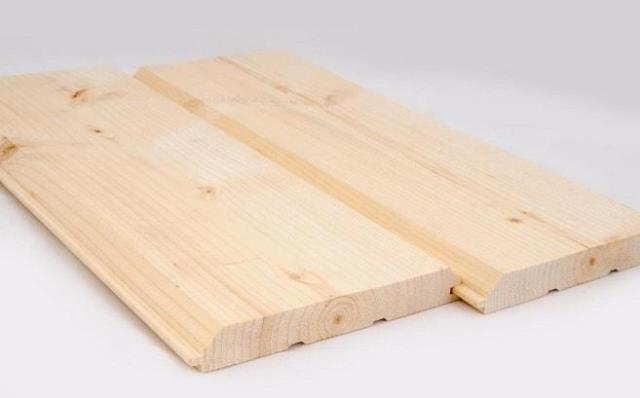
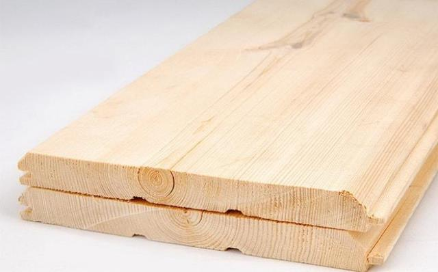
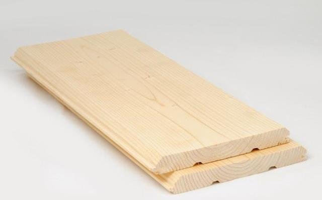

Имитация бруса -отделочный пиломатериал. Реалистично воспроизводит фактуру брусовых цельнодеревянных стен. От вагонки отличается большей толщиной и шириной доски.
Изготавливают имитатор из массива деревьев хвойных пород — ели, сосны, лиственницы. На лицевой стороне снимают фаски, на внутренней прорезают компенсационные канавки. Элементы при монтаже соединяются между собой системой шип-паз, создавая прочную водонепроницаемую поверхность. Достаточно низкая стоимость имитации бруса позволяет получить бюджетную натуральную отделку.
Используют для облицовки фасадов, обшивки каркасных домов, бань, саун, беседок, террас. Обшивка скрывает кривизну стен и дефекты поверхности. Доску крепят вертикально, горизонтально или наклонно. Отделку монтируют по обрешетке из брусков с вентиляционным зазором для циркуляции воздуха.
Защитить материал от агрессивного воздействия внешней среды помогают пропитки антисептиками, антипиренами, покрытие красками, лаком, маслами или воском.
Пиломатериал просушивают в специальных камерах до 14-16% влажности. Сушка снижает усадку, позволяет избежать коробления, растрескивания доски при эксплуатации, облегчает механическую обработку.
Чтобы купить имитацию бруса хорошего качества по доступной цене, выбирайте сорт А или АВ. Самые высококачественные сорта - Экстра и Прима.Преимущества пиломатериала:
Натуральные материалы отличаются яркой текстурой, приятным запахом. В помещениях, отделанных паропроницаемой древесиной, легко дышится. Смола, содержащаяся в древесине, обладает бактерицидным действием, отпугивает жучков-древоточцев.
| Название | Изображение | Сорт | Размер | Стоимость за м2, руб. |
|---|---|---|---|---|
| Имитация бруса клееная |  | - | от 35*200 до 40*270 мм | 1 300 |
| Имитация бруса клееная |  | АВ+ | S раб.=1,29 кв.м — 27*225 мм | 1 320 |
| Имитация бруса из лиственницы |  | Экстра | 80*185 мм | 1 580 |
|
Толщина x Ширина x Длина, мм |
Цена за 1 м², рублей |
|
|---|---|---|
|
Кировский |
Архангельский |
|
|
16 x 140 x 2000 - 6000 |
280 |
300 |
|
18 x 140 x 2000 - 6000 |
330 |
350 |
|
20 x 140 x 2000 - 6000 |
350 |
370 |
|
20 x 190 x 2000 - 6000 |
350 |
370 |
|
28 x 190 x 2000 - 6000 |
450 |
470 |